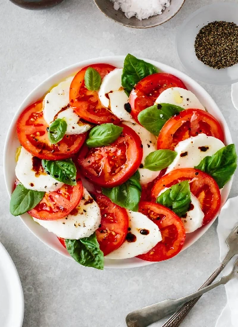

Caprese Salad
Ingredients:
- 2-3 large ripe tomatoes, sliced
- 1 ball fresh mozzarella cheese, sliced
- Fresh basil leaves
- Extra virgin olive oil
- Balsamic vinegar (optional)
- Salt and freshly ground black pepper
Instructions:
- Assemble the salad: On a serving platter, alternate layers of tomato slices, mozzarella slices, and fresh basil leaves.
- Season: Drizzle the salad with extra virgin olive oil and a little balsamic vinegar (if using). Sprinkle with salt and freshly ground black pepper.
- Serve: Serve immediately as a refreshing appetizer or side dish.